Illustrated guide - how to get back to your work after an interruption.
操作ガイド - 割り込みのあとに、元の作業へ素早く戻る方法。
Type a task name, or pick a past one with the arrow. The steps, the project and your "first step" note are filled in from last time, and the guide shows a target time learned from your own history.
To change the steps, press Edit steps (see step 2). Then press Start focusing. The app starts in Practice mode: it does not move or minimize your windows. Untick it only when you want the workspace features.
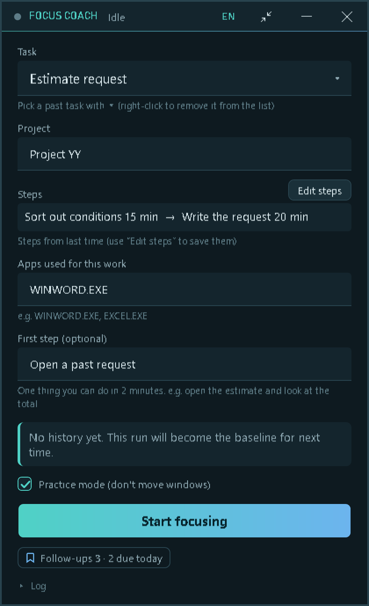
Press Edit steps next to the Steps list on the start panel. Each row is one step: a name and a target in minutes (the target is optional; the mini panel shows the timer against it with a progress bar). The note under the list tells you where the current steps came from: saved steps, last time's steps, or the previous run.
| Do this | Result |
|---|---|
| Type a name, press Enter | Moves to the target field. Enter again moves to the next row; on the last row it adds a new one. |
| + Add step | Adds an empty row. |
| ↑ / ↓ | Moves the row up or down (the order is the order you work in). |
| × | Deletes the row. |
| Save as this task's steps | Ticked: the steps are saved for this task and filled in automatically next time. Unticked: used for this run only. (Enter the task name first, otherwise this option is disabled.) |
| OK / Cancel | Apply the steps / discard your changes. |
Rules: step names must be unique and cannot contain commas or colons (full-width ones included); a target must be between 1 and 600 minutes, or left blank. If something is wrong, the editor shows what and on which row, and stays open (see the second picture).
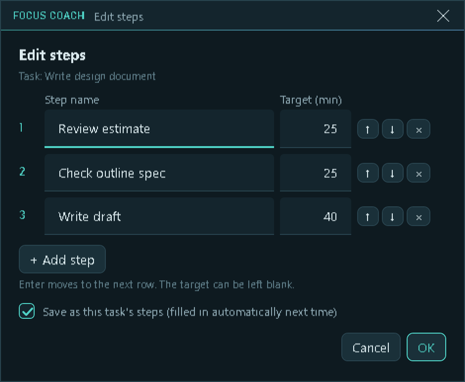
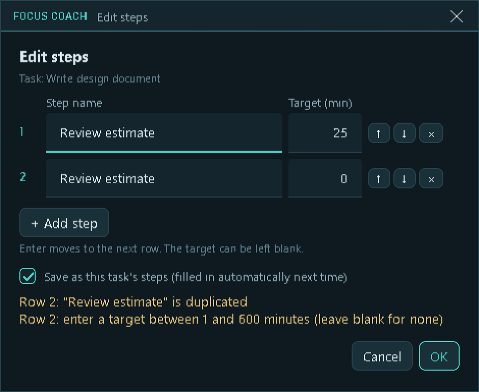
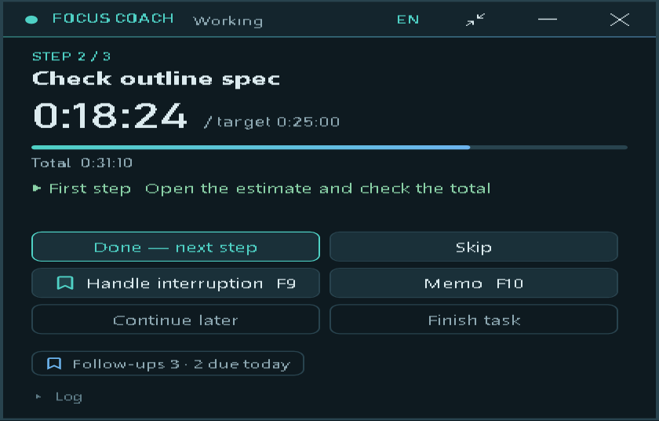
| Button | What it does |
|---|---|
| Done - next step | Finish the current step and go to the next one. |
| Handle interruption F9 | Place a bookmark and deal with the interruption (next step below). |
| Memo F10 | Jot down something to handle later - without stopping the timer. |
| Continue later | Suspend the whole task; it can be resumed another day. |
| Finish task | End the task and see the review. (The app stays open.) |
One key press, no typing, no confirmation. The status changes to Handling interruption and the timer stops counting your work. Go and answer the question.
If you want to leave a hint for yourself, press F10 and write where you were and your next step. You will see it again when you return.
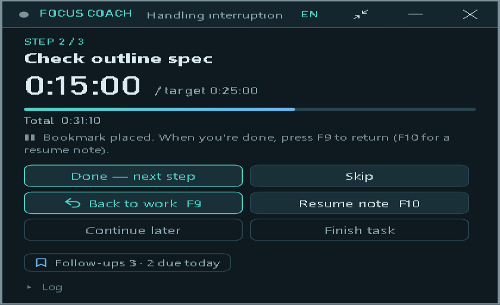
A small card opens. You can just press Enter (or F9 once more) to close it with nothing written.
Esc means "still handling it".
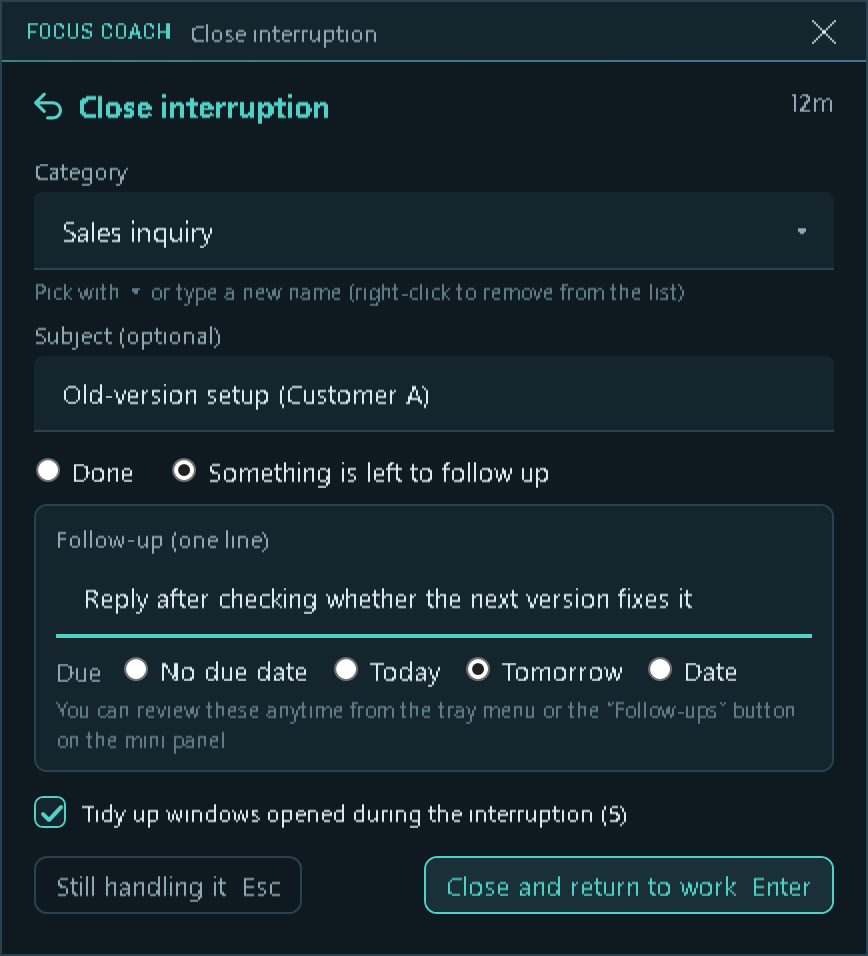
Your original work window comes back to the front. A calm card shows your task, your own "next step" note and a short countdown (40 seconds by default). What you do in those seconds is up to you - a deep breath, some tea, a look at your notes. Then the card fades away and you are back at work.
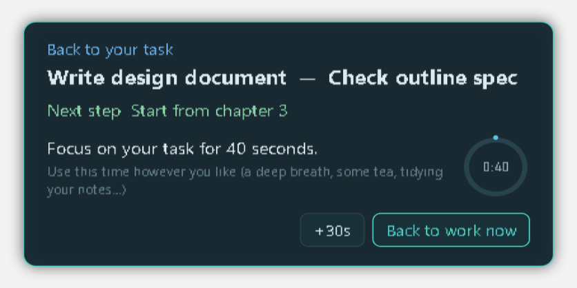
Back to work now skips the wait, +30s gives you more time. Short interruptions (under 60 seconds) skip the guide.
Everything you left over is kept in a list that survives across tasks. The mini panel shows a small counter; click it (or use the tray menu) to open the list. Check an item to mark it done, x deletes it. Done items stay visible for 7 days.
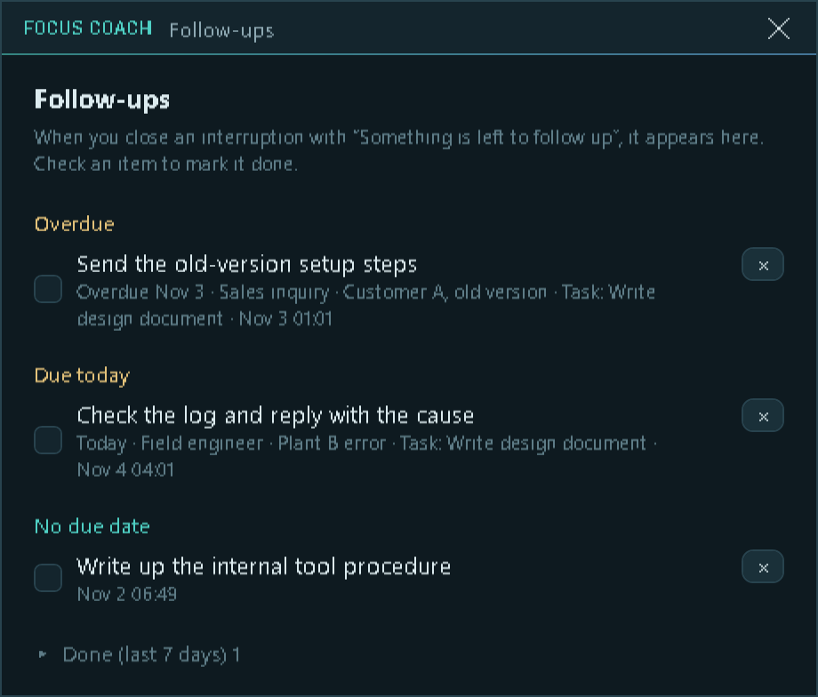
Press F8 to shrink the app into a small translucent strip that lets clicks through to the app underneath. Hold Ctrl while pointing at it to use its buttons. Minimizing sends the app to the system tray (on Windows 11 the icon may be under the ^ arrow).
| Key | Action |
|---|---|
| F9 | Interruption bookmark / close it |
| F10 | Memo (while working) / resume note (during an interruption) |
| F8 | Compact view on / off |
| Ctrl+Alt+F8 | Switch language (Japanese / English) |
Hotkeys can be changed in settings.json (the README, section "Settings", lists every setting; key values are virtual-key codes, F9 = 120). If another app already owns a key, FocusCoach tells you and every action is still available by button.
タスク名を入力するか、▾ で過去のタスクを選びます。手順・プロジェクト・「最初の一手」が前回の内容で入り、ガイドには、過去の実績から出した目標の時間が表示されます。
手順を変えるときは「手順を編集」を押します(手順 2 を参照)。そのあと「集中を始める」を押します。最初は練習モード(ウィンドウを動かさない)です。作業用ウィンドウの整理を使うときだけ、チェックを外してください。
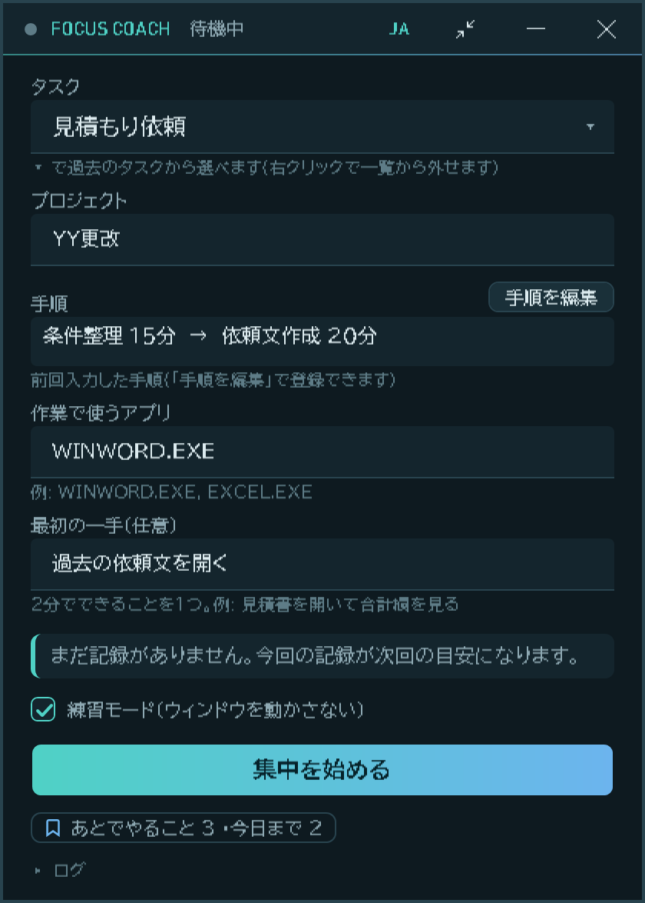
開始準備の「手順」の横にある「手順を編集」を押します。1 行が 1 つの手順で、名前と目安(分)を入れます(目安は任意です。ミニパネルに、目安に対するタイマーと進み具合のバーが出ます)。一覧の下の文言で、今の手順が「登録した手順」「前回入力した手順」「前回の実行の手順」のどれから来たかが分かります。
| 操作 | 動作 |
|---|---|
| 名前を入れて Enter | 目安の欄へ移ります。もう一度 Enter で次の行へ。最後の行では、新しい行を足します。 |
| + 手順を追加 | 空の行を足します。 |
| ↑ / ↓ | 行を上・下へ動かします(上から順に作業する順序です)。 |
| × | 行を削除します。 |
| このタスクの手順として登録する | チェックあり: このタスクの手順として保存し、次回から自動で入ります。チェックなし: この回だけ使います。(先にタスク名を入れてください。未入力だと選べません。) |
| 決定 / キャンセル | 手順を反映する / 変更を捨てる。 |
決まり: 手順の名前は重複できず、カンマとコロン(全角を含む)は使えません。目安は 1〜600 分、または空欄です。誤りがあると、どの行がどう違うかを表示して、エディタは閉じません(下の 2 枚目の画像)。
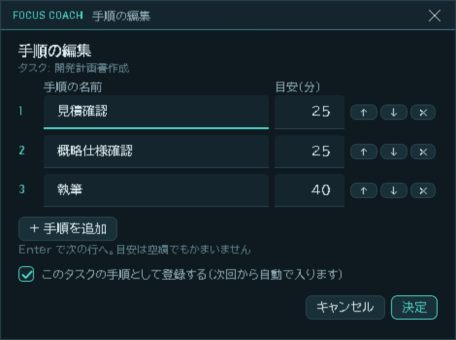
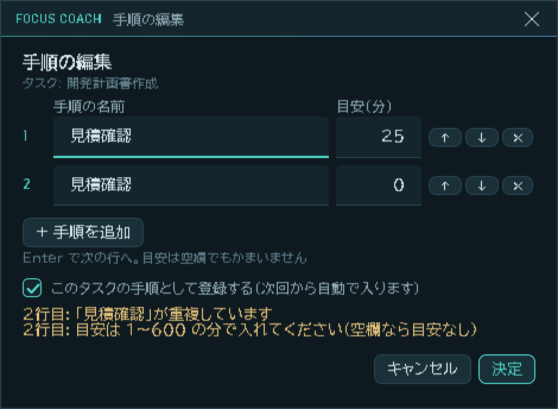
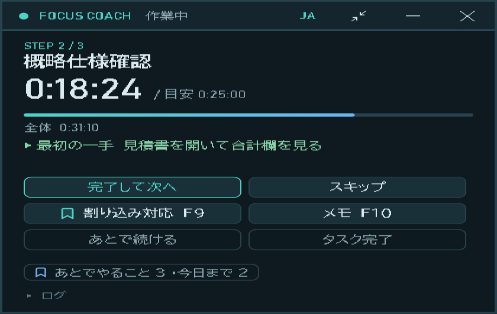
| ボタン | 動作 |
|---|---|
| 完了して次へ | 今の手順を終えて、次の手順へ進みます。 |
| 割り込み対応 F9 | しおりを挟んで、割り込みに対応します(次の手順)。 |
| メモ F10 | あとで対応することを書き留めます。タイマーは止まりません。 |
| あとで続ける | タスク全体を中断します。別の日に続きから再開できます。 |
| タスク完了 | タスクを終えて振り返りを見ます(アプリは閉じません)。 |
キーを 1 回押すだけです。入力も確認もありません。状態が「割り込み対応中」になり、作業時間の計測が止まります。そのまま対応してください。
自分へのヒントを残したいときは F10 で、どこまで進んだかと次の一手を書きます。戻ったときに、また表示されます。
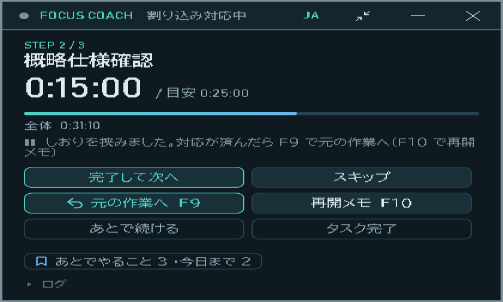
小さなカードが開きます。何も書かずに Enter(または F9 をもう一度)で閉じられます。
Esc は「まだ対応を続ける」です。
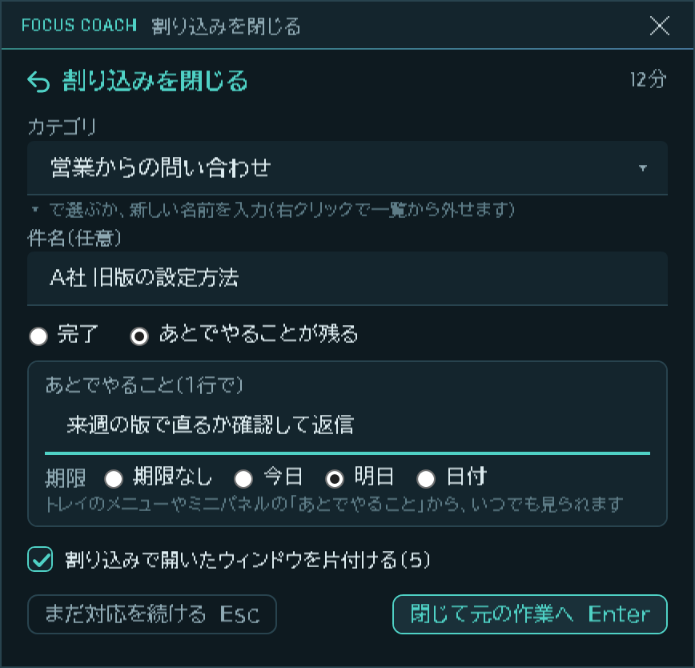
元の作業ウィンドウが前に出ます。落ち着いたカードに、タスク・自分で書いた「次の一手」・短いカウントダウン(既定 40 秒)が出ます。この間に何をするかは自由です(深呼吸、お茶、メモを眺める、など)。時間がたつとカードが消えて、作業に戻ります。
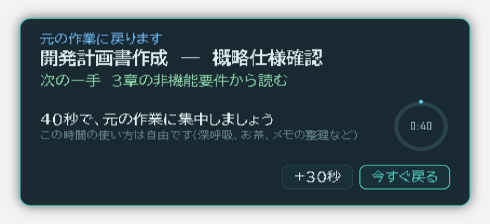
「今すぐ戻る」で待たずに戻れます。「+30秒」で時間を延ばせます。短い割り込み(60 秒未満)では出ません。
残したものは、タスクをまたいで残る一覧に入ります。ミニパネルの小さな件数をクリックする(またはトレイのメニュー)と一覧が開きます。チェックで完了、× で削除です。完了したものは 7 日間、下に畳んで見えます。
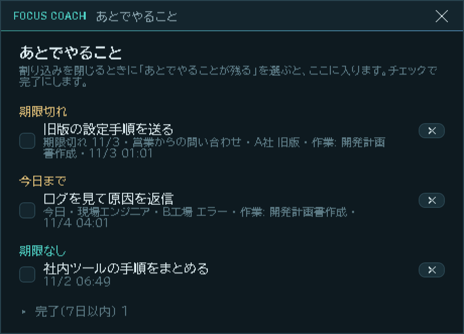
F8 で、アプリを小さな半透明の帯に縮めます。クリックは下のアプリに通ります。Ctrl を押しながら重ねると、ボタンを使えます。最小化するとタスクトレイに入ります(Windows 11 では、アイコンが ^ の中にあることがあります)。
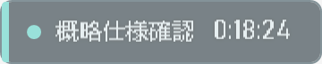
| キー | 動作 |
|---|---|
| F9 | 割り込みのしおり / 割り込みを閉じる |
| F10 | メモ(作業中)/ 再開メモ(割り込み中) |
| F8 | コンパクト表示の切り替え |
| Ctrl+Alt+F8 | 表示言語の切り替え(日本語 / English) |
キーは settings.json で変えられます(README の「設定(settings.json)」に項目の一覧があります。キーの値は仮想キーコードで、F9 = 120)。ほかのアプリが同じキーを使っているときは画面でお知らせします。ボタンでも同じ操作ができます。